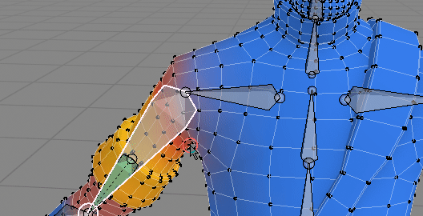
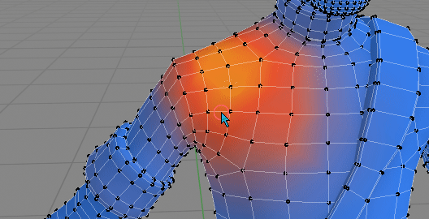
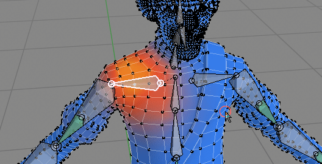
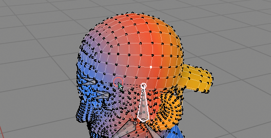

WPT Hotkeys¶
Hotkeys work only in Weight Paint Mode:
- Ctrl + X - Weight Paint Tool pie menu (can be changed in preferences)
- Ctrl + D - draw weights gradient with 'Draw Gradient' tool.
 Ctrl + LMB - Select Bone when vertex masking is enabled (can be changed in preferences)
 Alt (+Shift) + LMB - Loop select when vertex masking is enabled (can be changed in preferences)
 ctrl + [+/-] - grow/shrink selection when vertex masking is enabled
 ctrl + L - select linked when vertex masking is enabled